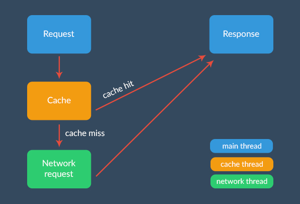
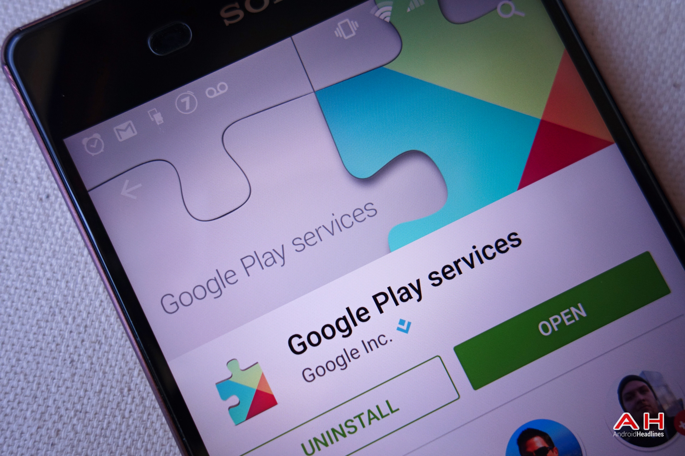

1: Overview & Tools
Mobile Application Development


Android introduced a new user interface language to the world, one that is gradually evolving in flexibility and expressiveness. The first application we will build exhibits a range of new concepts you may not have come across before. Here we tour this app in detail, exploring each of the artifacts we have composed, and attempt to get a sense of how they fit together to form a running app.
2: UI Design

Android introduced a new user interface language to the world, one that is gradually evolving in flexibility and expressiveness. The first application we will build exhibits a range of new concepts you may not have come across before. Here we tour this app in detail, exploring each of the artifacts we have composed, and attempt to get a sense of how they fit together to form a running app.
3: Multithreading & Networking

In this section we take a brief look at persistence within an Android app (via SQLite) but focus mainly on how the Android OS implements multithreading and deals with running tasks in the background. We also investigate the different approaches available to the developer for making http calls and API requests.
4: Google Services

Google Services is a layer of services Android apps can use. This includes location services, google sign-in, cloud, contacts, maps etc. Here we focus on just 3 of the services - Google+ Sign-in, Location and Maps.
5: Practical Labs

To support the lecture material and give the reader an opportunity to experiment with Android development, these labs are built around a single Case Study - CoffeeMate - where the labs begin with some relatively basic functionality and steadily progress with the implementation of some of the more advanced features such as Google Sign-in, Location Services and Maps.